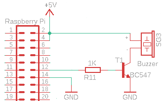

Mit einem Piezo Signalgeber am GPIO kann man so einiges anstellen, er kann nicht nur ein Piepton erzeugen, sondern auch Musik abspielen.
Einleitung
Am Raspberry Pi kann ein Piezo Signalgeber, oft wird er auch als Buzzer bezeichnet, angeschlossen werden. Ein Piepen zu erzeugen ist dann ganz leicht. Interessanter ist es aber ein Musikstück darauf spielen zu lassen.
Schaltung
Der Piezo Signalgeber sollte nicht direkt an den GPIO geschlossen werden, da die Stromaufnahme für den Ausgang zumeist zu hoch ist (30 mA). Über einen
Transistor kann, die Ansteuerung nahezu stromlos erfolgen. Dadurch kann das Piezo Element auch mit 5 V versorgt werden.
Im Schaltungsbeispiel wurde der GPIO18, also bei WiringPi Nummerierung der Pin 1, verwendet. Über den Basis-Vorwiderstand kann man auch die Lautstäke etwas reduzieren - wenn dann der Transistor nicht komplett durchschaltet und dann die Spannung nicht 5 V erreicht. Darum kann ein Vorwiderstand von 4,7 KOhm gewählt werden. Per Software lässt sich das eingeschränkt über das Puls-Pause-Verhältnis anpassen.

Ansteuerung
Ein einfacher Piep geht in der Konsole mit WiringPi gpio Kommandos:
gpio mode 1 out; gpio write 1 1; sleep 0.1; gpio write 1 0; gpio mode 1 in
Damit wird einfach für kurze Zeit der Ausgang gesetzt und ein konstanter kurzer Ton wird ausgegeben.
Wie kann man nun aber Music ausgeben? Dazu muss am Ausgang eine Frequenz erzeugt werden, man muss also den Ausgang mehrmals pro Sekunde ein- und ausschalten. Je nach Frequenz ergibt sich dann ein spezifischer Ton.
In Python geht das über eine Library wie z. B. RPi.GPIO:
|
|
In C könnte man sich das auch leicht selbst programmieren:
|
|
gcc -o tone tone.c -lwiringPi -Wall
./tone
Music
Man darf sich nicht zu viel erwarten, wenn man über einen Piezo Signalgeber Music ausgeben will, aber einzelne Tonfolgen funktionieren. Auf der Seite MUTOPIA PROJECT kann man sich viele klassische Musikstücke im Midi-Format herunterladen (CC Lizenzen). Bei BitMidi kann man bekannte Melodien im Midi-Format finden und direkt im Browser abspielen. Ansonsten eignet sich der VLC-Player am besten um in die Musikstücke am PC abspielen zu können. Auf der Seite Midi To Arduino kann man Midi-Dateien in Tonfolgen konvertieren. Die Midi-Dateien haben zumeist mehrere Spuren (Tracks), sodass man sich bei der Erzeugung für einen entscheiden muss. Die Seite schlägt eine Spur (Track) vor, üblicherweise passt diese Voreinstellung. Bei Klavierstücken ist das oft “up”. Danach muss man noch das Zielsystem (Device) auswählen. Hier muss “Raspberry Pi (Python, GPIO)” aktiviert werden. Nach dem Drücken der Schaltfläche “Convert to Arduino”, wird der Programmcode dargestellt. Nun kann der Source in einer py-Datei gespeichert werden.
Allerdings sind noch ein paar Anpassungen nötig:
- Bei “tonePin = 21” muss der korrekte GPIO also z. B. 18 eingegeben werden.
- Die Zeile “p = GPIO.PWM(tonePin, pitch)” ist leider falsch und muss durch “p.ChangeFrequency(pitch)” ersetzt werden.
- Die Zeile “delay(duration)” entspricht der Dauer der Note, hier kann man mit einem Faktor noch eine generelle Geschwindigkeitsanpassung des Stücks vornehmen, “delay(duration*1.5)".
Danach kann man sich das Stück anhören, indem man mit python3 die Datei ausführt.
Beispielvideo